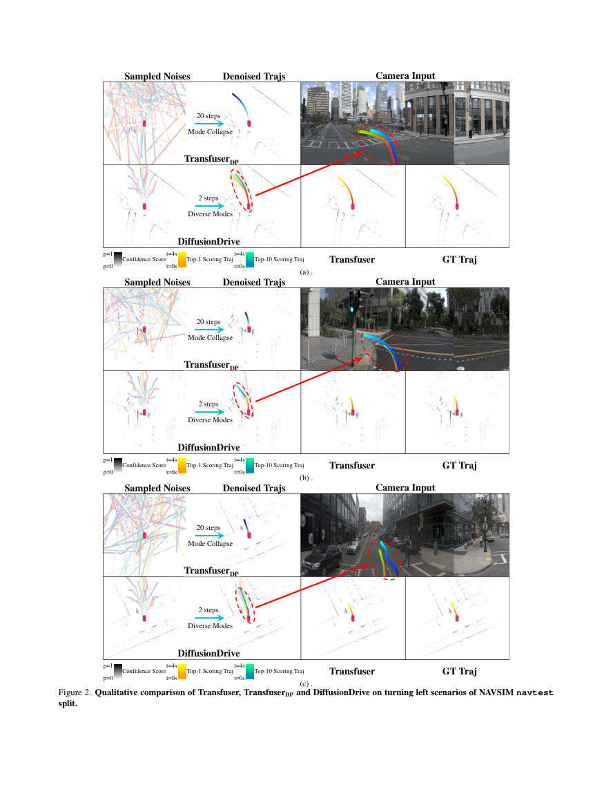

DiffusionDrive：用于端到端自动驾驶的截断扩散模型
原文： Bencheng Liao 等，《DiffusionDrive: Truncated Diffusion Model for End-to-End Autonomous Driving》，CVPR 2025，论文集第 12037–12047 页（11 页正式主文）。CVF 正式版 · 官方补充材料 · 官方代码。
译文说明： 原阅读包制作于 2026-09-18；本次依据其中真实的 11 页 CVPR 正式原文及作者发布的补充材料进行完整重制。以下依原文顺序翻译主文摘要、第 1–5 节、致谢及补充材料 A–C；参考文献列表不翻译。正文中原有的文献编号、公式编号、表图编号与关键数值保留。主文与补充材料分别编号的表格明确加注“主文”或“补充”，避免混淆。作者描述与额外解释分离；仅必要时使用“译注”。
摘要（主文第 1 页）
最近，扩散模型作为一种强大的生成技术在机器人策略学习中受到关注，它能够对多种动作模式（multi-mode action distributions）的分布进行建模。将这种能力用于端到端自动驾驶是很有前景的方向。然而，机器人扩散策略需要大量去噪步骤，而交通场景又更加动态、更加开放，因此要以实时速度生成多样的驾驶动作面临很大挑战。为此，我们提出一种新的截断扩散策略（truncated diffusion policy）：该策略引入事先获得的多模态轨迹锚点，并截断扩散时间表，使模型从以锚点为中心的高斯分布学习去噪，最终得到多模态驾驶动作分布。此外，我们设计了高效的级联扩散解码器（cascade diffusion decoder），使其能够更充分地与作为条件的场景上下文交互。与普通扩散策略相比，DiffusionDrive 将去噪步骤减少了 10 倍，仅用 2 步就得到质量更好且更多样的结果。在面向规划的 NAVSIM 数据集上，使用一致的 ResNet-34 主干网络，DiffusionDrive 无须额外技巧即可达到 88.1 PDMS，创造新的纪录，同时在 NVIDIA 4090 上实现 45 FPS 的实时速度。困难场景中的定性实验进一步证实，DiffusionDrive 能够稳定生成多种合理且不同的驾驶动作。
图 1：不同端到端范式比较（主文第 1 页）
图 1：不同端到端范式的比较。(a) 单模式回归（single-mode regression）[8,16,20]；(b) 从轨迹词表中采样（sampling from vocabulary）[4,25]；(c) 常规扩散策略（vanilla diffusion policy）[7,19]；(d) 本文提出的截断扩散策略。图内的 Scene Representation 为场景表示，Ego Query 为自车查询，Reg 为回归，Trajectory 为轨迹，Multi-mode Trajectories 为多模式轨迹，Score of Each Anchor 为每个锚点的分数，Denoise 为去噪，Scoring 为评分，Gaussian Distribution 为高斯分布，Anchored Gaussian Dist. 为锚定高斯分布，Confidence Score 为置信分数。

1. 引言（主文第 1–2 页）
近年来，随着感知模型（如检测 [5,17,24,42]、跟踪 [54–56]、在线建图 [27,28,32] 等）的发展，直接从原始传感器输入学习驾驶策略的端到端自动驾驶得到了广泛关注。这种数据驱动的方法，为传统基于规则的运动规划提供了一种可扩展而稳健的替代方案；后者往往难以泛化到复杂的真实道路驾驶环境。
为了有效地从数据中学习，主流端到端规划器（例如 Transfuser [8]、UniAD [16]、VAD [20]）通常如图 1(a) 所示，通过一个 ego-query 回归单条模式轨迹。然而，这种范式没有考虑驾驶行为内在的不确定性和多模式性质。最近，VADv2 [4] 引入一个庞大的固定锚轨迹词表（4096 个锚点），把连续动作空间离散化，并根据预测分数从锚点中采样，以覆盖更广泛的驾驶行为，如图 1(b) 所示。然而，这种大型固定词表范式从根本上受到锚点数量与质量的限制，对于词表外的情况往往表现不佳。此外，管理大量锚点会给实时应用带来显著的计算挑战。扩散模型 [7] 并不把动作空间离散化，而是已在机器人领域被证明是一种强大的生成式决策策略：它可以通过迭代去噪，从高斯分布直接采样出多个物理上合理的动作模式。
这启发我们把扩散模型在机器人领域的成功复制到端到端自动驾驶中。我们在代表性的单模式回归方法 Transfuser [8] 上应用普通机器人扩散策略，提出其变体 TransfuserDP：依据条件扩散模型 [34]，用条件扩散模型替换确定性 MLP 回归头。虽然 TransfuserDP 提高了规划性能，但出现两个主要问题。第一，如表 2 所示，普通 DDIM 扩散策略需要多达 20 次去噪步骤，在推理阶段产生沉重的计算开销，妨碍其用于实时自动驾驶。第二，如图 2 所示，从不同高斯噪声采样获得的轨迹严重重叠。这表明，要使扩散模型适应动态、开放世界的交通场景并非易事。
与仅根据场景上下文，从随机高斯噪声中采样动作的普通扩散策略不同，人类驾驶员遵循已有驾驶模式，并根据实时交通条件动态调整。这一认识促使我们把先验驾驶模式嵌入扩散策略：以先验锚点为中心，把高斯分布划分为多个子高斯分布，称为锚定高斯分布（anchored Gaussian distribution）。具体做法是如图 3 所示截断扩散时间表，仅在先验锚点附近加入少量高斯噪声。由于扩散模型具有多模式分布表达能力，该截断扩散策略能够有效覆盖潜在动作空间，而无须像 VADv2 一样使用大量固定锚点。从锚定高斯分布中采样得到更合理的初始噪声之后，我们可以截断去噪过程，把所需步骤从 20 次减少到仅 2 次，从而显著加速并满足实时自动驾驶要求。
为了增强与条件场景上下文的交互，我们提出高效的、基于 Transformer 的扩散解码器。它不仅与感知模块输出的结构化 query 交互，而且通过稀疏可变形注意力机制 [3,62] 与鸟瞰视图（BEV）和透视视图（PV）特征交互。此外，我们引入级联机制，使解码器在每个去噪步骤内迭代细化轨迹重建结果。
凭借上述创新，我们提出用于实时端到端自动驾驶的扩散模型 DiffusionDrive。我们在面向规划的 NAVSIM 数据集 [11] 上，采用非反应式仿真（non-reactive simulation）和闭环评估进行基准测试。在不额外加入复杂技巧的情况下，使用相同 ResNet-34 主干的 DiffusionDrive 在 NAVSIM navtest 划分上达到 88.1 PDMS，显著超越此前最先进的方法。即使与 NAVSIM 挑战赛获胜方案 Hydra-MDP-V8192-W-EP [25] 相比，后者沿用 VADv2 的 8192 个锚轨迹并加入后处理和额外监督，DiffusionDrive 仅通过人类示范直接学习、推理时不做后处理，仍领先 1.6 PDMS，并在 NVIDIA 4090 上以 45 FPS 实时运行。我们还在流行的 nuScenes 数据集 [2] 上使用开放环评估验证 DiffusionDrive 的优势；在相同 ResNet-50 主干下，DiffusionDrive 运行速度比 VAD [20] 快 1.8 倍，L2 误差降低 20.8%，碰撞率降低 63.6%，取得当时先进的规划性能。
我们的贡献可概括如下。
- 我们率先将扩散模型引入端到端自动驾驶领域，提出截断扩散策略，解决普通扩散策略直接用于交通场景时出现的模式坍塌与巨大计算开销问题。
- 我们设计高效、基于 Transformer 的扩散解码器，以级联方式与条件信息交互，从而更好地重建轨迹。
- 在无需额外技巧的前提下，DiffusionDrive 在相同主干下实现 NAVSIM navtest 88.1 PDMS 的纪录，同时在 NVIDIA 4090 上维持 45 FPS 的实时性能。
- 我们通过定性实验展示，DiffusionDrive 在多种困难场景中可生成更加多样且合理的轨迹，体现出高质量的多模式驾驶动作。
译注：原文专门区分了用于描述输入数据的“multimodal”（多模态，例如相机和 LiDAR）与用于描述不同规划决策的“multi-mode”（多模式）。本文将后者统一译为“多模式”。
2. 相关工作（主文第 2–4 页）
端到端自动驾驶（End-to-end autonomous driving）
UniAD [16] 作为先驱工作，通过融合多个感知任务提升规划性能，展示了端到端自动驾驶的潜力。VAD [20] 进一步研究如何通过紧凑的矢量化场景表示提高效率。此后，一系列工作 [6,8,12,23,26,43,45,58] 沿用单轨迹规划范式，继续提高规划性能。最近，VADv2 [4] 转向多模式规划：对大型固定锚点词表评分并从中采样。Hydra-MDP [25] 通过引入基于规则的评分器提供的额外监督，改进了 VADv2 的评分机制。SparseDrive [39] 探索不使用 BEV 的替代方案。与已有多模式规划方法不同，我们提出一种利用强大生成式扩散模型开展端到端自动驾驶的新范式。
用于交通仿真的扩散模型（Diffusion model for traffic simulation）
已有驾驶扩散策略研究通过只使用抽象的感知真值 [9,18,21,44] 进行交通仿真。MotionDiffuser [21] 和 CTG [60] 是把扩散模型用于多智能体运动预测的先驱工作，它们利用条件扩散模型从高斯噪声中采样目标轨迹。CTG++ [59] 进一步引入大语言模型（LLM）进行语言驱动的引导，提高可用性并实现真实感更强的交通仿真。Diffusion-ES [48] 则以进化搜索替代基于奖励梯度的引导式去噪。我们的工作超越了仅在交通仿真中使用感知真值的扩散模型，通过截断扩散策略和高效扩散解码器，释放扩散模型在实时端到端自动驾驶方面的潜力。
用于机器人策略学习的扩散模型（Diffusion model for robotic policy learning）
Diffusion Policy [7] 展示了扩散模型在机器人策略学习中的巨大潜力，能够有效刻画多模式动作分布和高维动作空间。Diffuser [19] 提出无条件扩散模型进行轨迹采样，并结合无分类器引导（classifier-free guidance）、图像修复（image inpainting）等技术实现引导式采样。此后，许多研究将扩散模型用于各类机器人任务，包括固定位置操作 [1,53]、移动操作 [47]、自主导航 [37,51]、四足机器人运动 [38] 和灵巧操作 [46]。然而，直接把普通扩散策略用于端到端自动驾驶面临独特挑战，因为它既要求实时效率，也要求在动态、开放的交通场景中生成合理的多模式轨迹。本研究提出新的截断扩散策略，解决上述问题，并引入尚未在机器人领域探索的思路。
用于图像生成的扩散模型（Diffusion model for image generation）
扩散模型已广泛用于图像生成任务 [33,36,49,50,61]。DDIM [35] 通过非马尔可夫扩散过程，在显著减少采样步骤的同时实现高效采样，改进了 DDPM [14]。Flow Matching [30,31] 通过直接建模连续概率流进一步优化生成过程。TDPM [57] 提出截断去噪，从隐式的中间分布开始生成，以加速采样。与这些方法不同，我们的方法在扩散策略中引入显式驾驶先验，有效地把扩散过程引导到专门适用于端到端自动驾驶的更准确、更高效的生成目标。
图 2 与图 3（主文第 3–4 页）
图 2： 在 NAVSIM navtest 划分的困难场景上，对 Transfuser、TransfuserDP 与 DiffusionDrive 进行定性比较。使用相同的前向相机与 LiDAR 输入，DiffusionDrive 得到规划质量最高的 top-1 评分轨迹，见表 2。图中把 DiffusionDrive 预测的多样轨迹突出显示并渲染在前视图中。(a) 直行以及 top-10 中的不同变道轨迹；(b) 左转以及 top-10 中的不同变道轨迹。两者都表明，DiffusionDrive 评分最高的轨迹与真实轨迹相近，top-10 中还存在高质量的变道方案；这种能力在多模式 TransfuserDP 中未观察到，在单轨迹 Transfuser 中更不可能产生。图内 Sampled Noises 为采样噪声，Denoised Trajs 为去噪后轨迹，Camera Input 为相机输入，Mode Collapse 为模式坍塌，Diverse Modes 为多种驾驶模式，GT Traj 为真实轨迹，Confidence Score 为置信分数，Top-1/Top-10 Scoring Traj 为分数最高/前十的轨迹。
图 3： 与普通扩散策略比较，说明截断扩散策略。我们截断扩散过程，只向锚轨迹添加少量高斯噪声，接着训练扩散模型，使其基于条件场景上下文，从锚定高斯分布重建真实轨迹。推理时也截断去噪过程：与纯高斯噪声相比，从锚定高斯分布中质量更高的初始样本出发。图内 Adding noise to the anchors with truncated diffusion schedule 为使用截断时间表向锚点加噪；Denoising from anchored Gaussian distribution with fewer steps 为从锚定高斯分布用更少步数去噪。原文图示的 q 和 p 为前向加噪与反向去噪分布。


3. 方法（主文第 4–6 页）
3.1 预备知识
任务定义。 端到端自动驾驶以原始传感器数据为输入，预测自车未来的行驶轨迹。轨迹表示成一系列路点
$$\tau={(x_t,y_t)}_{t=1}^{T_f},$$
其中 $T_f$ 是规划时域，$(x_t,y_t)$ 是当前自车坐标系中时刻 $t$ 的路点坐标。
条件扩散模型。 条件扩散模型的前向扩散过程，逐步向数据样本加噪，可定义为
$$q(\tau^i\mid\tau^0)=\mathcal N!\left(\tau^i;\sqrt{\bar\alpha_i}\,\tau^0,(1-\bar\alpha_i)I\right).\tag{1}$$
其中 $\tau^0$ 为未加噪的干净数据样本，$\tau^i$ 为扩散时间步 $i$ 的带噪样本（本文用上标 $i$ 表示扩散时间步）。常数 $\bar\alpha_i=\prod_{s=1}^i\alpha_s=\prod_{s=1}^i(1-\beta_s)$，$\beta_s$ 表示噪声时间表。我们训练反向过程模型 $f_\theta(\tau^i,z,i)$，使它在条件信息 $z$ 的引导下从 $\tau^i$ 预测干净样本 $\tau^0$；其中 $\theta$ 为可训练参数。在推理阶段，训练好的扩散模型 $f_\theta$ 在条件信息 $z$ 的引导下，从高斯分布中采样的随机噪声 $\tau^T$ 开始，逐步细化得到预测的干净数据 $\tau^0$，其过程定义为
$$p_\theta(\tau^0\mid z)=\int p(\tau^T)\prod_{i=1}^{T}p_\theta(\tau^{i-1}\mid\tau^i,z)\,d\tau^{1:T}.\tag{2}$$
3.2 初步调查
把 Transfuser [8] 改造成条件扩散模型。 我们首先以具有代表性的确定性端到端规划器 Transfuser [8] 为基础，按照普通扩散策略 [7]，把回归 MLP 层替换为条件扩散模型 UNet，由此构建生成模型 TransfuserDP。评估时，我们采样随机噪声，并用 20 步逐渐细化。表 2 表明，TransfuserDP 的规划质量优于确定性 Transfuser。
模式坍塌。 为进一步研究普通扩散策略在驾驶场景中的多模式性质，我们从高斯分布中采样 20 组随机噪声，分别用 20 步进行去噪。如图 2 所示，尽管起始随机噪声不同，去噪之后却收敛到相似轨迹。为了定量分析这种模式坍塌现象，我们根据每条去噪轨迹与所有去噪轨迹并集之间的平均交并比（mIoU），定义模式多样性分数 $D$：
$$D=1-\frac1N\sum_{i=1}^{N}\frac{\operatorname{Area}!\left(\tau_i\cap\bigcup_{j=1}^{N}\tau_j\right)}{\operatorname{Area}!\left(\tau_i\cup\bigcup_{j=1}^{N}\tau_j\right)}.\tag{3}$$
其中 $\tau_i$ 表示第 $i$ 条去噪轨迹，$N$ 是采样轨迹总数，$\bigcup_{j=1}^{N}\tau_j$ 是所有去噪轨迹的并集。mIoU 越高，说明去噪轨迹的多样性越低。表 2 的定量多样性结果进一步验证了图 2 中的观察。
沉重的去噪开销。 DDIM [35] 扩散策略从随机噪声生成可行轨迹需要 20 个去噪步骤，造成显著计算开销。如表 2 所示，FPS 从 60 降至 7，因此难以用于实时在线驾驶应用。
3.3 截断扩散
与普通扩散策略从随机噪声开始去噪不同，人类驾驶遵循相对固定的驾驶模式。受此启发，我们提出截断扩散策略：去噪从锚定高斯分布开始，而不是从标准高斯分布开始。为了让模型学会从锚定高斯分布去噪至目标驾驶策略，我们还截断训练阶段的扩散时间表，只向锚点中加入少量高斯噪声。
训练。 首先使用 K-Means 在训练集轨迹上聚类，得到 $N_{\mathrm{anchor}}$ 个轨迹锚点 ${a_k}{k=1}^{N{\mathrm{anchor}}}$，其中 $a_k={(x_t,y_t)}_{t=1}^{T_f}$。我们截断扩散噪声时间表，使锚点扩散为锚定高斯分布：
$$\tau_k^i=\sqrt{\bar\alpha_i}\,a_k+\sqrt{1-\bar\alpha_i}\,\epsilon,\quad\epsilon\sim\mathcal N(0,I),\quad i\in[1,T_{\mathrm{trunc}}],\; T_{\mathrm{trunc}}\ll T.\tag{4}$$
训练时，扩散解码器 $f_\theta$ 接收 $N_{\mathrm{anchor}}$ 条带噪轨迹 ${\tau_k^i}$ 作为输入，预测相应的分类分数 ${\hat s_k}$ 与去噪轨迹 ${\hat\tau_k}$：
$${\hat s_k,\hat\tau_k}{k=1}^{N{\mathrm{anchor}}}=f_\theta!\left({\tau_k^i}{k=1}^{N{\mathrm{anchor}}},z\right).\tag{5}$$
这里 $z$ 表示条件信息。我们将距离真实轨迹 $\tau_{\mathrm{gt}}$ 最近的锚点附近的带噪轨迹分配为正样本（$y_k=1$），其他轨迹作为负样本（$y_k=0$）。训练目标由轨迹重建和分类两项组成：
$$\mathcal L=\sum_{k=1}^{N_{\mathrm{anchor}}}\left[y_k\mathcal L_{\mathrm{rec}}(\hat\tau_k,\tau_{\mathrm{gt}})+\lambda\operatorname{BCE}(\hat s_k,y_k)\right].\tag{6}$$
其中 $\lambda$ 平衡简单的 L1 重建损失 $\mathcal L_{\mathrm{rec}}$ 与二元交叉熵（BCE）分类损失。
推理。 我们采用截断去噪过程：从锚定高斯分布中采样带噪轨迹作为起点，逐渐去噪得到最终预测。在每个去噪时间步，将上一步估计的轨迹传入扩散解码器 $f_\theta$，得到 $N_{\mathrm{infer}}$ 条轨迹的分类分数 ${\hat s_k}{k=1}^{N{\mathrm{infer}}}$ 和坐标 ${\hat\tau_k}{k=1}^{N{\mathrm{infer}}}$。获得当前时间步的预测后，应用 DDIM [35] 更新规则，为下一个时间步采样轨迹。
推理灵活性。 我们方法的一个关键优势是推理时的灵活性。模型虽然使用 $N_{\mathrm{anchor}}$ 条轨迹训练，但推理过程可以接受任意数量 $N_{\mathrm{infer}}$ 的轨迹样本；可以根据计算资源和应用要求动态调整 $N_{\mathrm{infer}}$。
3.4 架构
图 4 展示了 DiffusionDrive 的整体架构。它可以融合已有端到端规划器 [8,16,20,39] 的多种感知模块并接收不同的传感器输入。所设计的扩散解码器专门面向复杂、困难的驾驶任务，增强了与条件场景上下文的交互。
扩散解码器。 给定从锚定高斯分布采样得到的带噪轨迹集合 ${\hat\tau_k}{k=1}^{N{\mathrm{infer}}}$，首先根据轨迹坐标应用可变形空间交叉注意力（deformable spatial cross-attention）[29,42,62]，与 BEV 或 PV 特征交互。接着在轨迹特征和感知模块输出的智能体/地图 query 之间应用交叉注意力，并执行前馈网络（FFN）。为了编码扩散时间步信息，我们使用时间步调制层（Timestep Modulation），之后用多层感知机（MLP）预测置信分数，以及相对于初始带噪轨迹坐标的偏移量。当前扩散解码层的输出作为下一个级联扩散解码层的输入。在推理期间，DiffusionDrive 还会复用这一系列级联解码层来迭代去噪；各个去噪时间步之间共享参数。最终选择置信分数最高的轨迹作为输出。
图 4： DiffusionDrive 总体架构。(a) DiffusionDrive 可结合多种已有感知模块和传感器输入；(b) 扩散解码器以锚定高斯分布采样得到的带噪轨迹为输入，通过级联方式加强与条件场景上下文交互，并逐步去噪生成最终预测。图中 On-board Sensor Data 为车载传感器数据；Perception (Map/Det) 为感知模块（地图/检测）；BEV/PV 为鸟瞰图/透视视图特征；Agent/Map Cross-Attn 为智能体/地图交叉注意力；Spatial Cross-Attn 为空间交叉注意力；Timestep Modulation 为时间步调制；Iterative Diffusion Denoising 为迭代扩散去噪；Diffusion Decoder Layer 为扩散解码层；Score/Traj. 为评分/轨迹。

4. 实验（主文第 6–8 页）
4.1 数据集
NAVSIM。 NAVSIM [11] 是面向规划的真实世界数据集，建立在 OpenScene [10] 之上；后者是目前规模最大的公开标注驾驶数据集 nuPlan [22] 的紧凑重分发版本。NAVSIM 使用八个相机获得完整的 360° 视野，并结合来自五个传感器的融合 LiDAR 点云。其标注频率为 2 Hz，包含高清地图和物体边界框。该数据集着重覆盖驾驶意图发生动态改变的困难场景，同时有意排除静止或恒速行驶等简单场景。
NAVSIM 使用非反应式仿真与闭环指标对规划性能进行综合评估。本文采用所提出的 PDM 分数（PDMS）[11]，它是多个子分数的加权组合：无责任碰撞（NC）、可行驶区域合规（DAC）、碰撞时间（TTC）、舒适性（Comf.）和自车前进进度（EP）。
4.2 实现细节
为了公平比较，我们与 Transfuser 使用相同的感知模块和 ResNet-34 主干 [13]。在扩散解码层中，遵循 Transfuser 基于 BEV 的设置，我们只通过空间交叉注意力与 BEV 特征交互。由于 Transfuser 的感知模块不包含矢量化地图构建，因此只执行智能体交叉注意力。我们堆叠两层级联扩散解码层，并采用含 20 个聚类锚点的截断扩散策略。训练时将扩散时间表截断到 1000 步中的前 50 步；推理仅使用 2 次去噪，并选取得分最高的 top-1 轨迹进行评估。
训练和推理配方直接遵循 Transfuser：输入为三张裁剪与下采样后的前视相机图像，拼接为一张 $1024\times256$ 图像，并使用栅格化的 BEV LiDAR。DiffusionDrive 在 navtrain 划分上从零开始训练 100 个 epoch，采用 AdamW 优化器和 8 张 NVIDIA 4090 GPU，总 batch size 为 512，学习率 $6\times10^{-4}$。测试阶段不使用数据增强。在 navtest 划分上，最终输出是未来 4 秒、包含 8 个路点的轨迹。
4.3 定量比较
表 1 在 NAVSIM navtest 上对比 DiffusionDrive 与已有先进方法。在相同的 ResNet-34 主干下，DiffusionDrive 达到 88.1 PDMS，明显优于此前基于学习的方法。与 VADv2 相比，DiffusionDrive 的 PDMS 高 7.2，锚点数则从 8192 降至 20，减少约 400 倍。相对于沿用 VADv2 从词表采样范式的 Hydra-MDP，DiffusionDrive 的 PDMS 高 5.1。即使和 Hydra-MDP-V8192-W-EP 相比，后者通过额外监督拟合 EP 评估指标，并使用加权置信分数后处理，DiffusionDrive 仍分别在 EP 和总体 PDMS 上领先 3.5 和 1.6，且仅依赖人类示范直接学习，不需要任何后处理。与仅在规划模块存在差异的 Transfuser 基线相比，DiffusionDrive 的 PDMS 显著提高 4.1，并在全部子指标上超过它。
主文表 1：NAVSIM navtest 上的面向规划闭环指标比较。 C & L 表示同时使用相机与 LiDAR；V8192 表示使用 8192 个锚点；Hydra-MDP-V8192-W-EP 通过基于规则的评估器增加监督，并使用加权置信分数后处理。最佳和次佳数字在原表中以粗体和下划线表示。所有指标越高越好。
| 方法 |
输入 |
图像主干 |
锚点数 |
NC |
DAC |
TTC |
Comf. |
EP |
PDMS |
| UniAD [16] |
Camera |
ResNet-34 |
0 |
97.8 |
91.9 |
92.9 |
100 |
78.8 |
83.4 |
| PARA-Drive [45] |
Camera |
ResNet-34 |
0 |
97.9 |
92.4 |
93.0 |
99.8 |
79.3 |
84.0 |
| LTF [8] |
Camera |
ResNet-34 |
0 |
97.4 |
92.8 |
92.4 |
100 |
79.0 |
83.8 |
| Transfuser [8] |
C & L |
ResNet-34 |
0 |
97.7 |
92.8 |
92.8 |
100 |
79.2 |
84.0 |
| DRAMA [52] |
C & L |
ResNet-34 |
0 |
98.0 |
93.1 |
94.8 |
100 |
80.1 |
85.5 |
| VADv2-V8192 [4] |
C & L |
ResNet-34 |
8192 |
97.2 |
89.1 |
91.6 |
100 |
76.0 |
80.9 |
| Hydra-MDP-V8192 [25] |
C & L |
ResNet-34 |
8192 |
97.9 |
91.7 |
92.9 |
100 |
77.6 |
83.0 |
| Hydra-MDP-V8192-W-EP [25] |
C & L |
ResNet-34 |
8192 |
98.3 |
96.0 |
94.6 |
100 |
78.7 |
86.5 |
| DiffusionDrive（本文） |
C & L |
ResNet-34 |
20 |
98.2 |
96.2 |
94.7 |
100 |
82.2 |
88.1 |
4.4 从 Transfuser 到 DiffusionDrive 的演进路径
表 2 表明，把 Transfuser 用普通扩散策略改造成生成式 TransfuserDP，能让 PDMS 提高 0.6，模式多样性得分 $D$ 增加 11%。但这也显著加大规划模块的开销：所需去噪步数增加 20 倍，每步时间增加 32 倍，总运行开销增至约 650 倍。采用截断扩散策略后，TransfuserTD 把去噪步数从 20 降至 2，同时 PDMS 再提高 1.1，多样性提高 59%。进一步加入本文扩散解码器，完整模型 DiffusionDrive 达到 88.1 PDMS 和 74% 模式多样性得分 $D$。相比 TransfuserDP，DiffusionDrive 的 PDMS 高 3.5、多样性高 64%，去噪步数降低 10 倍、FPS 提高约 6 倍，从而实现实时、高质量的多模式规划。
主文表 2：NAVSIM navtest 上的模型演进。 TransfuserDP 为使用普通 DDIM [7] 扩散策略的 Transfuser；TransfuserTD 为使用截断扩散策略的版本。“单步耗时”表示每次去噪步骤的运行时间；FPS 与运行时间均在 NVIDIA 4090 上测得；$D$ 使用公式（3）定义。NC、DAC、TTC、Comf.、EP 与 PDMS 越高越好；参数量、耗时越低越好。
| 方法 |
NC |
DAC |
TTC |
Comf. |
EP |
PDMS |
规划模块 |
单步耗时 |
步数 |
总耗时 |
D |
参数量 |
FPS |
| Transfuser |
97.7 |
92.8 |
92.8 |
100 |
79.2 |
84.0 |
MLP |
0.2ms |
1 |
0.2ms |
0% |
56M |
60 |
| TransfuserDP |
97.5 |
93.7 |
92.7 |
100 |
79.4 |
84.6（+0.6） |
UNet |
6.5ms |
20 |
130.0ms |
11% |
101M |
7 |
| TransfuserTD |
97.9 |
94.2 |
93.9 |
100 |
80.2 |
85.7（+1.7） |
UNet |
6.9ms |
2 |
13.8ms |
70% |
102M |
27 |
| DiffusionDrive |
98.2 |
96.2 |
94.7 |
100 |
82.2 |
88.1（+4.1） |
Decoder |
3.8ms |
2 |
7.6ms |
74% |
60M |
45 |
4.5 消融研究
扩散解码器不同设计的作用。 表 3 展示各项扩散解码器设计选择的有效性。ID-1 对应表 2 中的 TransfuserTD。比较 ID-6 和 ID-1 可以看到，所提出的扩散解码器使参数量降低 39%，同时使规划质量显著提高 2.4 PDMS。由于缺少与环境之间丰富而分层的交互，ID-2 出现严重的性能退化。对比 ID-2 与 ID-3，表明空间交叉注意力对准确规划至关重要。ID-5 说明本文提出的级联机制有效，并可进一步改善性能。
主文表 3：不同解码器设计的消融。 “级联解码器”表示堆叠两层级联扩散解码层。ID-1 对应表 2 中的 TransfuserTD，使用条件 UNet 与 ego-query 交互；Transfuser 原先使用该 ego-query 直接回归单模式轨迹。✓ / ✗ 表示是否采用相应模块。
| ID |
UNet |
Ego Query |
空间交叉注意力 |
Agent/Map 交叉注意力 |
级联解码 |
参数量 |
NC |
DAC |
TTC |
Comf. |
EP |
PDMS |
| 1 |
✓ |
✓ |
✗ |
✗ |
✗ |
102M |
97.9 |
94.2 |
93.9 |
100 |
80.2 |
85.7 |
| 2 |
✗ |
✓ |
✗ |
✗ |
✗ |
57M |
88.7 |
83.2 |
80.0 |
84.8 |
43.3 |
55.1 |
| 3 |
✗ |
✓ |
✓ |
✗ |
✗ |
58M |
98.2 |
95.4 |
94.4 |
100 |
81.3 |
87.1 |
| 4 |
✗ |
✓ |
✗ |
✓ |
✗ |
58M |
97.9 |
93.5 |
93.8 |
100 |
79.8 |
85.1 |
| 5 |
✗ |
✓ |
✓ |
✓ |
✗ |
59M |
98.0 |
95.8 |
94.4 |
100 |
81.7 |
87.4 |
| 6 |
✗ |
✓ |
✓ |
✓ |
✓ |
60M |
98.2 |
96.2 |
94.7 |
100 |
82.2 |
88.1 |
去噪步数。 表 4 表明，由于具有合理的初始状态，DiffusionDrive 即使只去噪一步，也能取得良好的规划质量。继续增加去噪步骤可以改善质量，并为复杂环境提供推理灵活性。
主文表 4：去噪步骤数消融。 数值按论文原表保留，其中 3 步对应的 EP 为 92.2，而同一行 PDMS 为 88.1，原文如此，不在译文中擅自纠正。
| 去噪步数 |
参数量 |
NC |
DAC |
TTC |
Comf. |
EP |
PDMS |
| 1 |
60M |
98.3 |
96.0 |
94.7 |
100 |
82.1 |
87.9 |
| 2 |
60M |
98.2 |
96.2 |
94.7 |
100 |
82.2 |
88.1 |
| 3 |
60M |
98.2 |
96.3 |
94.7 |
100 |
92.2 |
88.1 |
级联阶段数。 表 5 消融研究级联阶段数量的影响。增加级联阶段数能够改善规划质量，但在 4 个阶段附近趋于饱和，同时导致每个去噪步骤使用更多参数与推理时间。
主文表 5：级联阶段数。
| 级联阶段数 |
参数量 |
NC |
DAC |
TTC |
Comf. |
EP |
PDMS |
| 1 |
59M |
98.0 |
95.8 |
94.4 |
100 |
81.7 |
87.4 |
| 2 |
60M |
98.2 |
96.2 |
94.7 |
100 |
82.2 |
88.1 |
| 4 |
65M |
98.4 |
96.2 |
94.9 |
100 |
82.4 |
88.2 |
采样噪声数量 $N_{\mathrm{infer}}$。 正如第 3.3 节所述，DiffusionDrive 可以简单地改变从锚定高斯分布中采样的噪声数量，从而生成数量不同的轨迹。表 6 表明，仅使用 10 份采样噪声就能取得不错的规划质量；通过采样更多噪声，DiffusionDrive 能覆盖更大的潜在规划动作空间，进而改善规划质量。
主文表 6：采样噪声数量 $N_{\mathrm{infer}}$。
| 采样数 |
参数量 |
NC |
DAC |
TTC |
Comf. |
EP |
PDMS |
| 10 |
60M |
97.9 |
93.5 |
93.1 |
100 |
80.0 |
84.9 |
| 20 |
60M |
98.2 |
96.2 |
94.7 |
100 |
82.2 |
88.1 |
| 40 |
60M |
98.5 |
96.2 |
94.8 |
100 |
82.5 |
88.2 |
4.6 定性比较
由于 PDMS 规划指标根据评分最高的 top-1 轨迹计算，而所提出的 $D$ 分数评估模式多样性，因此仅凭这两项指标无法完全衡量不同候选轨迹的质量。为了进一步验证多模式轨迹的质量，我们在图 2 中可视化 NAVSIM navtest 划分中困难场景的 Transfuser、TransfuserDP 和 DiffusionDrive 规划结果。结果表明，DiffusionDrive 生成的多模式轨迹不仅多样，而且质量较高。在图 2(a) 中，DiffusionDrive 评分最高的轨迹与真实轨迹非常接近，而特别标出的 top-10 评分轨迹还尝试进行了高质量变道。图 2(b) 中，突出的 top-10 评分轨迹也执行了变道；与其相邻的一条较低分轨迹进一步考虑周围交通参与者，从而有效避免碰撞。
4.7 在 nuScenes 数据集上的定量比较
nuScenes 数据集此前是端到端规划领域流行的基准。由于 nuScenes 大部分场景是简单、平凡的情形，我们只在表 7 中进行比较。我们在 SparseDrive [39] 基础上实现 DiffusionDrive，沿用其训练与推理配方，并采用 ST-P3 [15] 提出的开放环指标。该实现堆叠两层级联扩散解码器，使用 18 个聚类锚点的截断扩散策略。
如表 7 所示，DiffusionDrive 将 SparseDrive 的平均 L2 误差降低了 0.04m，取得最低的平均 L2 误差以及并列最低的平均碰撞率。此外，DiffusionDrive 也具有较高效率：相较 VAD，其速度快 1.8 倍，L2 误差低 20.8%，碰撞率低 63.6%。
主文表 7：nuScenes 上开放环指标比较。 FPS 按 SparseDrive [39] 的方法在单张 NVIDIA 4090 GPU 上测量；指标计算遵循 ST-P3 [15]。L2（米）与碰撞率（%）越低越好；FPS 越高越好。
| 方法 |
输入 |
图像主干 |
L2 1s |
L2 2s |
L2 3s |
L2 平均 |
碰撞率 1s |
2s |
3s |
平均 |
FPS |
| ST-P3 [15] |
Camera |
EffNet-b4 |
1.33 |
2.11 |
2.90 |
2.11 |
0.23 |
0.62 |
1.27 |
0.71 |
1.6 |
| UniAD [16] |
Camera |
ResNet-101 |
0.45 |
0.70 |
1.04 |
0.73 |
0.62 |
0.58 |
0.63 |
0.61 |
1.8 |
| OccNet [41] |
Camera |
ResNet-50 |
1.29 |
2.13 |
2.99 |
2.14 |
0.21 |
0.59 |
1.37 |
0.72 |
2.6 |
| VAD [20] |
Camera |
ResNet-50 |
0.41 |
0.70 |
1.05 |
0.72 |
0.07 |
0.17 |
0.41 |
0.22 |
4.5 |
| SparseDrive [39] |
Camera |
ResNet-50 |
0.29 |
0.58 |
0.96 |
0.61 |
0.01 |
0.05 |
0.18 |
0.08 |
9.0 |
| DiffusionDrive（本文） |
Camera |
ResNet-50 |
0.27 |
0.54 |
0.90 |
0.57 |
0.03 |
0.05 |
0.16 |
0.08 |
8.2 |
5. 结论（主文第 8 页）
在本文中，我们通过所提出的截断扩散策略与高效级联扩散解码器，构建了一种用于端到端自动驾驶的新型生成式驾驶决策模型 DiffusionDrive。DiffusionDrive 能够从锚定高斯分布中对数量可变的样本进行去噪，以实时速度生成多样的规划轨迹。充分的实验与定性比较验证了 DiffusionDrive 在规划质量、运行效率和模式多样性方面的优势。
致谢（主文第 9 页）
本工作获得了中国国家自然科学基金（NSFC）项目编号 62276108 的部分资助。作者感谢 Tianheng Cheng 对论文初稿提出的有益反馈。
主文后续第 9–11 页为参考文献列表，按约定不翻译。以下为官方单独发布的补充材料。
官方补充材料：DiffusionDrive
补充材料与正式主文配套；其表 1、表 2、图 1–3 的编号独立于主文。参考文献列表不翻译。
A. 更多实现细节（Further Implementation Detail）
我们为 NAVSIM [3] 和 nuScenes [1] 两个数据集上的方法提供更多实现细节。
NAVSIM 数据集。 我们使用 ImageNet 预训练权重初始化 ResNet-34 [5] 主干网络，并按照 Transfuser 基线 [3]，把 LiDAR 在前、后、左、右四个方向的覆盖范围均设为 32m。我们还沿用 Transfuser 基线 [3] 执行辅助感知任务，包括 3D 目标检测和 2D BEV 语义分割。目标查询（object queries）与 BEV 特征作为所提出的扩散解码器的输入。
nuScenes 数据集。 我们按照 SparseDrive 基线 [6] 进行两阶段训练。模型直接由官方开源实现提供的第一阶段预训练权重初始化；第一阶段仅训练感知任务，包括 3D 物体检测/跟踪、矢量化高清地图构建以及运动预测。随后在 nuScenes 上训练第二阶段模型 10 个 epoch，把 SparseDrive 的规划模块替换为本文的扩散解码器和截断扩散机制。目标查询、地图查询以及 PV 特征作为扩散解码器的输入。
B. 更多消融研究（Further Ablation Study）
补充材料表 1：驾驶先验的比较。 Anchored Dist. 表示锚定高斯分布，Extra. Traj. 表示根据当前自车状态外推的轨迹。原表以蓝色标示的第一行是主文中的 DiffusionDrive 基线。指标 NC、DAC、TTC、Comf.、EP、PDMS 均越高越好。
| 训练先验 |
推理先验 |
NC |
DAC |
TTC |
Comf. |
EP |
PDMS |
| 锚定高斯分布 |
锚定高斯分布 |
98.2 |
96.2 |
94.7 |
100 |
82.2 |
88.1 |
| 锚定高斯分布 |
当前状态外推轨迹 |
96.3 |
91.7 |
90.4 |
100 |
76.8 |
81.3 |
| 当前状态外推轨迹 |
当前状态外推轨迹 |
97.3 |
94.0 |
92.6 |
100 |
79.6 |
84.7 |
驾驶先验比较。 在补充材料表 1 中，我们验证先验轨迹锚点优于由当前状态外推得到的先验轨迹。第 1 行为 DiffusionDrive 基线。第 2 行使用基线模型，但推理不是从 $N_{\mathrm{infer}}$ 条采样轨迹开始，而是从一条外推轨迹开始。第 3 行表示训练时仅使用一个锚点（也就是外推轨迹），推理也围绕它进行采样。结果表明，所提出的锚定高斯分布明显优于外推先验；后者无法覆盖潜在动作空间，因而难以有效处理真实场景中的困难情况（例如避障和转弯），这一结论与 NAVSIM 论文 [3] 表 1 中同基于 ego-status 的规划器的比较相符。
补充材料表 2：锚点来源的泛化。 我们在 CARLA Longest6 基准上测试 DiffusionDrive，所用聚类锚点来自 NAVSIM 数据集。† 表示该结果引用自 Transfuser 论文 [2]。DS 为驾驶评分、RC 为路线完成率、IS 为违规评分；均越高越好。
| 方法 |
锚点来源 |
DS ↑ |
RC ↑ |
IS ↑ |
| Transfuser† |
无 |
47.30±5.72 |
93.38±1.20 |
0.50±0.06 |
| DiffusionDrive |
NAVSIM |
64.27±2.43 |
94.16±1.46 |
0.69±0.02 |
锚点来源的泛化。 为进一步研究锚点来源的泛化能力，我们使用从 NAVSIM 聚类得到的锚定高斯分布，在 CARLA [4] 数据集上训练 DiffusionDrive（补充材料表 2 的第 2 行）。由于 CARLA 数据集与 NAVSIM 完全不同，较好的结果验证了所提出锚定高斯分布的泛化能力：该分布的设计目的是覆盖潜在的多模式驾驶动作空间，而不是通过使用训练集/验证集信息泄漏来提升性能。
C. 更多定性比较（Further Qualitative Comparison）
本节提供规划导向 NAVSIM 数据集 navtest 划分 [3] 上困难场景的更多定性比较。
直行。 补充图 1(a) 和图 1(b) 表明，DiffusionDrive 得分最高的 top-1 轨迹与真实轨迹接近，而突出的 top-10 轨迹能够稳定执行变道。特别地，补充图 1(c) 说明，所生成的多样 top-10 轨迹能够进一步识别交通信号灯，从而合理变道，并在停车线前停下。
左转。 补充图 2 显示，去噪后的多样轨迹会随着交通状况动态调整。突出的 top-10 轨迹既稳健又合理，能够有效执行变道。
右转。 补充图 3(a) 和图 3(b) 显示，DiffusionDrive 得分最高的 top-1 轨迹与真实轨迹相似，都倾向于跟随前车行驶；而突出的 top-10 轨迹则倾向于超越前车。这些结果验证 DiffusionDrive 能够稳定生成多样而合理的驾驶动作。
补充图 1： 在 NAVSIM navtest 直行场景中，Transfuser、TransfuserDP 和 DiffusionDrive 的定性比较。图内对比采样噪声、去噪轨迹和相机输入；普通 TransfuserDP 的“20 steps / Mode Collapse”（20 步/模式坍塌）与 DiffusionDrive 的“2 steps / Diverse Modes”（2 步/多样模式）形成对照。Top-1 为最高分轨迹，Top-10 为前十候选，GT Traj 为真实轨迹，Confidence Score 为置信度。
补充图 2： 在 NAVSIM navtest 左转场景中，Transfuser、TransfuserDP 和 DiffusionDrive 的定性比较。三个场景 (a)、(b)、(c) 中均同时展示采样噪声、去噪轨迹和相机输入，并将多样轨迹以不同颜色叠加到行车画面。置信度、Top-1/Top-10 与起止时间 $t=0s/4s$ 的标识与补充图 1 一致。
补充图 3： 在 NAVSIM navtest 右转场景中，Transfuser、TransfuserDP 和 DiffusionDrive 的定性比较。三个场景 (a)、(b)、(c) 中红色虚线圈出转弯区域，箭头对应从去噪轨迹到相机视图的预测。顶部对照普通扩散的模式坍塌，底部展示截断扩散形成的多条合理轨迹。图例与前述补充图相同。



补充材料参考文献列表不翻译；保留原文 PDF 中的引用编号供查阅。